Lundi, 07:45 : sans infirmières
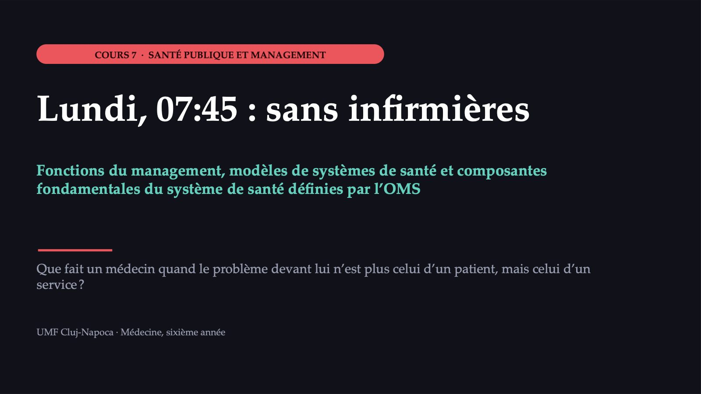
1 / 47Le service de médecine interne, lundi matin
![PREMIER ACTE · LA SITUATION Le service de médecine interne, lundi matin LE SERVICE 28 patients hospitalisés pour 30 lits ; trois ont besoin d’une surveillance attentive L’ÉQUIPE DE JOUR habituellement trois infirmières ; à 07:45, deux ont envoyé un arrêt maladie LA JOURNÉE quatre admissions programmées, deux patients annoncés par les urgences ; équipe suivante à 14:00 Les ressources humaines n’ont personne. L’infirmière de nuit propose de rester deux heures de plus. Cas construit pour le cours ; les détails sont plausibles, non réels. Cas construit ; valeurs hypothétiques.](diapozitive/C07/002.jpg) 2 / 47
2 / 47Au téléphone, juste après la nouvelle des absences
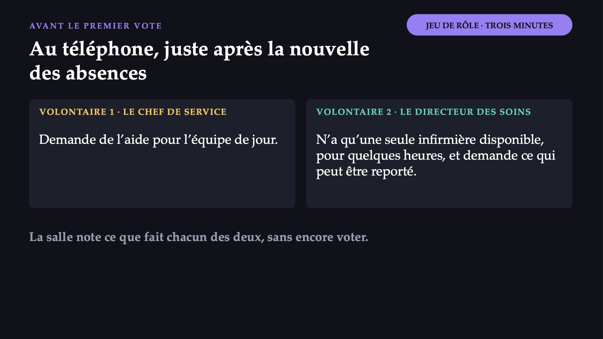
3 / 47Vous êtes le chef de service. Que faites-vous dans les trente premières minutes ?
![MENTIMETER · VOTE 1 PREMIÈRE DÉCISION Vous êtes le chef de service. Que faites-vous dans les trente premières minutes ? A Vous demandez à la direction de suspendre les admissions, programmées et des urgences, jusqu’à l’après-midi B Vous demandez une infirmière d’un autre service, reprogrammez ce qui peut attendre et répartissez les tâches C Vous acceptez que l’infirmière de nuit reste deux heures de plus et prenez vous-même une partie des traitements D Vous signalez la situation par écrit au directeur et attendez sa décision Vote individuel, sans discussion. Répondez sur votre téléphone, au code affiché.](diapozitive/C07/004.jpg) 4 / 47
4 / 47Convainquez votre voisin de banc
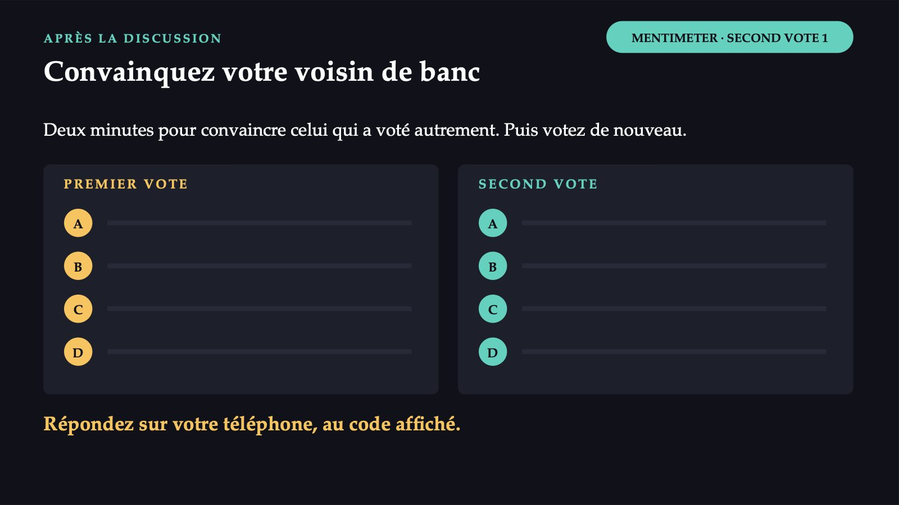
5 / 47Obtenir des résultats par le travail des autres
![QU’EST-CE QUE LE MANAGEMENT Obtenir des résultats par le travail des autres Le chef de service ne traite pas un patient : il répartit les deux mains d’une infirmière entre vingt-huit patients. POURQUOI C’EST DIFFÉRENT EN SANTÉ PLUSIEURS ACTEURS le propriétaire, le payeur, la direction de santé publique, l’accréditation, les patients, les salariés LA QUALITÉ NE SE VOIT PAS le patient ne peut pas la juger seul ; elle s’assure par des règles, des normes et des contrôles LIMITES ÉTHIQUES un hôpital ne refuse pas un patient grave parce que son traitement coûte cher](diapozitive/C07/006.jpg) 6 / 47
6 / 47De Fayol aux quatre fonctions d’aujourd’hui
![LES FONCTIONS DU MANAGEMENT De Fayol aux quatre fonctions d’aujourd’hui Les activités par lesquelles un dirigeant transforme les ressources d’une organisation en résultats. La planification L’organisation La direction Le contrôle FAYOL la prévision, la planification, l’organisation, le commandement, la coordination et le contrôle UN MANUEL UNIVERSITAIRE RÉCENT quatre fonctions de base ; le cours utilise celles-ci, et la direction tient la place du commandement et de la coordination Sources : Fayol, théorie générale du management ; OpenStax, Principles of Management (manuel universitaire).](diapozitive/C07/007.jpg) 7 / 47
7 / 47Ce que signifie chaque fonction dans le service
![SUR DES EXEMPLES D’HÔPITAL Ce que signifie chaque fonction dans le service LA PLANIFICATION le besoin en infirmières pour l’année suivante ; dans le service, la liste de remplacement manque L’ORGANISATION qui fait quoi et qui répond de quoi ; une infirmière déplacée vers le service surchargé LA DIRECTION motiver et communiquer : ce qui est reporté aujourd’hui et pourquoi LE CONTRÔLE compare le résultat à ce qui était prévu : indicateurs, audit d’un cas, analyse d’une plainte Dans la même matinée, le chef de service organise, dirige et note ce qu’il faudra planifier et contrôler.](diapozitive/C07/008.jpg) 8 / 47
8 / 47Mintzberg : dix rôles, en trois catégories
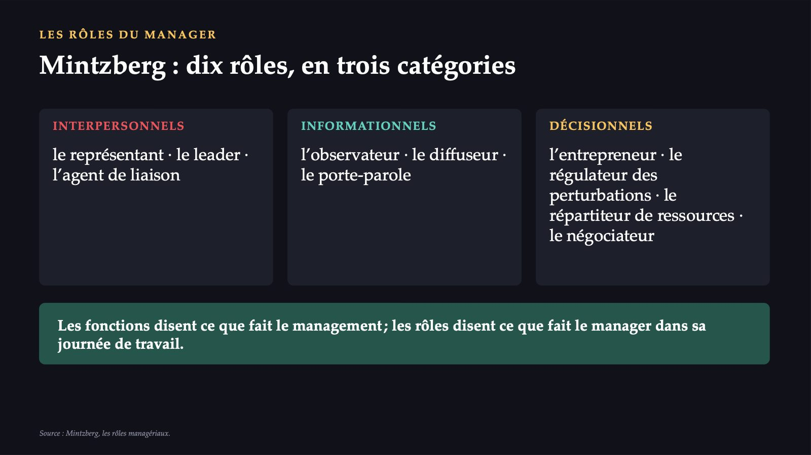
9 / 47Lundi matin, le chef de service joue quatre rôles
![LES RÔLES, DANS LE CAS DU SERVICE Lundi matin, le chef de service joue quatre rôles le régulateur des perturbations le répartiteur de ressources l’agent de liaison le négociateur Les deux derniers, au téléphone avec le directeur des soins. Le rôle de leader influence les autres. La bonne volonté ne suffit pas : on dirige un service avec des compétences de management. Hypothèse d’une étude : les médecins accomplissent des tâches managériales dès le début de leur carrière, et les étudiants ne se sentent pas préparés à ce rôle.](diapozitive/C07/010.jpg) 10 / 47
10 / 47B : organisation et direction, suivies de planification et de contrôle
![PREMIÈRE DÉCISION · CE QUE DISENT LES FONCTIONS B : organisation et direction, suivies de planification et de contrôle A Déplace le problème vers les urgences et réduit l’accès ; la décision relève de la direction de l’hôpital. B Utilise les ressources de l’hôpital, reporte ce qui peut attendre, maintient la surveillance des instables. C Cache le problème : une garde de quatorze heures, et le chef ne dirige plus le service. D Laisse les patients sans décision aux heures de plus grand risque. Dans la crise, on voit l’organisation et la direction ; manquent la planification et le contrôle, qui ont produit la crise.](diapozitive/C07/011.jpg) 11 / 47
11 / 47Trois semaines plus tard : le problème ne date pas de lundi
![DEUXIÈME ACTE · LA COMPLICATION Trois semaines plus tard : le problème ne date pas de lundi LE PERSONNEL onze gardes non couvertes en trois mois ; deux infirmières parties à l’étranger LE PATIENT une plainte : traitement avec quatre heures de retard ; envoyée aussi à la direction de santé publique LA CHIRURGIE occupation d’environ 60 % : le bloc opératoire est en rénovation L’ARGENT le contrat n’augmente pas ; les heures supplémentaires ont dépassé le budget L’INFORMATION les données sur les lits et les gardes arrivent chaque mois, sur papier LA DÉCISION le directeur convoque le comité de direction élargi Cas construit pour le cours ; les détails sont plausibles, non réels. Cas construit ; valeurs hypothétiques.](diapozitive/C07/012.jpg) 12 / 47
12 / 47Ce qui semblait le problème d’un service relève de tout le système
 13 / 47
13 / 47Plus large que l’hôpital
![LE SYSTÈME DE SANTÉ Plus large que l’hôpital L’ensemble de toutes les organisations, personnes et actions dont le but principal est de promouvoir, de rétablir ou de maintenir la santé. l’hôpital le médecin de famille la direction de santé publique la caisse d’assurance maladie la pharmacie le ministère le patient, à domicile Un hôpital ne peut pas résoudre seul tous ses problèmes : une partie des causes se trouve dans d’autres organisations du système. Source : OMS, cadre des six composantes fondamentales du système de santé, 2007.](diapozitive/C07/014.jpg) 14 / 47
14 / 47Tout système, décrit par six parties
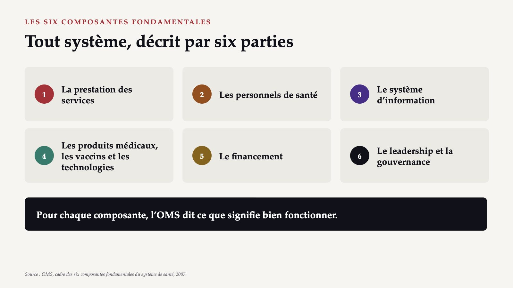
15 / 47Les services, les personnels, l’information
![CE QUE SIGNIFIE « BIEN FONCTIONNER » (I) Les services, les personnels, l’information LES SERVICES des interventions efficaces, sûres, de qualité, quand et là où il faut. Roumanie : un système centré sur l’hôpital. LES PERSONNELS en nombre suffisant, répartis équitablement, compétents et réactifs. Roumanie : près de 200 localités sans médecin de famille, en 2024. L’INFORMATION des informations fiables et à jour. Roumanie : pas de stratégie claire, des systèmes non interopérables. Sources : OMS, 2007 ; analyse du système de santé de la Roumanie (OMS Europe et Observatoire européen).](diapozitive/C07/016.jpg) 16 / 47
16 / 47Les produits, le financement, la gouvernance
![CE QUE SIGNIFIE « BIEN FONCTIONNER » (II) Les produits, le financement, la gouvernance LES PRODUITS MÉDICAUX un accès équitable à des produits essentiels sûrs, efficaces et coût-efficaces, utilisés rationnellement. LE FINANCEMENT des fonds suffisants et une protection contre l’appauvrissement dû au paiement des soins. Roumanie : les dépenses les plus faibles de l’UE (données de 2022). LA GOUVERNANCE cadres stratégiques, supervision, réglementation et redevabilité. Roumanie : planification insuffisante, réformes fragmentées. Sources : OMS, 2007 ; analyse du système de santé de la Roumanie (OMS Europe et Observatoire européen).](diapozitive/C07/017.jpg) 17 / 47
17 / 47La gouvernance, selon la formulation de l’OMS
![LE LEADERSHIP ET LA GOUVERNANCE La gouvernance, selon la formulation de l’OMS „Des cadres politiques stratégiques, assortis d’une supervision efficace, de la construction de coalitions, de réglementations et d’incitations appropriées, d’une attention à la conception du système et de la redevabilité.” On l’appelle aussi administration responsable du système : sa supervision et son orientation d’ensemble. La présentation des années précédentes attribuait la définition à d’autres auteurs ; le texte est celui du document de l’OMS de 2007. Source : OMS, cadre des six composantes fondamentales du système de santé, 2007.](diapozitive/C07/018.jpg) 18 / 47
18 / 47Les composantes sont des moyens, non des fins
![CE QUE VISE UN SYSTÈME Les composantes sont des moyens, non des fins six composantes l’accès · la couverture · la qualité · la sécurité quatre résultats LA SANTÉ son niveau et l’équité entre les groupes LA RÉACTIVITÉ respect de la personne ; orientation client LA PROTECTION contre le risque social et financier L’EFFICIENCE une efficience améliorée Plus d’infirmières ne signifie pas un traitement à temps, si elles sont mal réparties entre les services. Source : OMS, cadre des six composantes fondamentales du système de santé, 2007.](diapozitive/C07/019.jpg) 19 / 47
19 / 47À l’Hôpital A, une seule crise touche cinq composantes
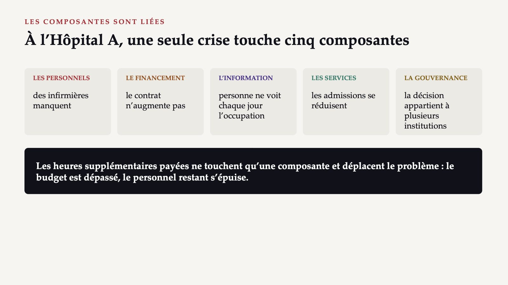
20 / 47Qui décide dans un hôpital public
![LE COMITÉ, DANS LA LOI Qui décide dans un hôpital public COMITÉ DE DIRECTION · ART. 181 le directeur de l’hôpital, le directeur médical et le directeur financier et comptable ; dans les hôpitaux de plus de 400 lits, aussi un directeur des soins CONSEIL D’ADMINISTRATION · ART. 187 5–8 membres, nommés par le ministère ou par la direction de santé publique et par l’autorité locale ; le syndicat, invité permanent Dans le cas, la caisse d’assurance maladie, le conseil départemental, le syndicat et les patients sont invités au comité de direction. Source : Loi n° 95/2006.](diapozitive/C07/021.jpg) 21 / 47
21 / 47Le comité de direction élargi de l’Hôpital A
![COMITÉ · QR PAR RANGÉE L’OUTIL DU JOUR Le comité de direction élargi de l’Hôpital A RANGÉE 1 Le directeur de l’hôpital Rôle 1 · Directeur RANGÉE 2 Le directeur médical Rôle 2 · Médical RANGÉE 3 Le représentant de la caisse départementale d’assurance maladie Rôle 3 · Caisse RANGÉE 4 Le représentant de l’association de patients Rôle 4 · Patients RANGÉE 5 Le responsable du syndicat Rôle 5 · Syndicat RANGÉE 6 Le représentant du conseil départemental Rôle 6 · Conseil Fiche de rôle · vote depuis le rôle · binômes · second vote · porte-parole Ouvrez sur votre téléphone la fiche de votre rangée.](diapozitive/C07/022.jpg) 22 / 47
22 / 47Que décide le comité ?
![MENTIMETER · VOTE 2 DEUXIÈME DÉCISION · DEPUIS LE RÔLE DE LA RANGÉE Que décide le comité ? A La fermeture temporaire de lits de médecine interne, jusqu’à ce que les postes soient pourvus B Des heures supplémentaires payées et des embauches temporaires, sans date de fin de la mesure C Le passage volontaire, avec formation, d’infirmières de chirurgie ; recrutement sur un an, avec le département ; gardes non couvertes suivies chaque mois D Une demande d’argent à la caisse et au conseil départemental, sans autres mesures D’abord votre rôle, ensuite le vote. Répondez sur votre téléphone, au code affiché.](diapozitive/C07/023.jpg) 23 / 47
23 / 47Le second vote et le vote par rôle
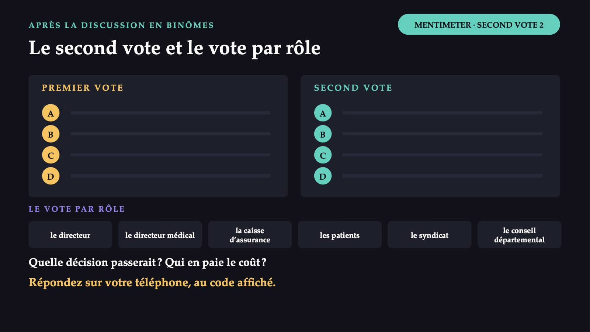
24 / 47C : plusieurs composantes et les quatre fonctions
![DEUXIÈME DÉCISION · CE QUE DISENT LES COMPOSANTES C : plusieurs composantes et les quatre fonctions A Sacrifie les services et réduit l’accès ; seulement temporaire et annoncée, par sécurité. B De l’argent à court terme ; ne change pas les causes des départs ; sans terme, elle devient la règle. C Les quatre fonctions ; le coût : du temps, de la confiance et une information que l’hôpital n’a pas. D Une demande sans plan, présentée au payeur et au propriétaire, a peu de chances d’aboutir. C suit l’idée de renforcement : les composantes, améliorées ensemble.](diapozitive/C07/025.jpg) 25 / 47
25 / 47Pourquoi classer les systèmes de santé
![QUI PAIE, QUI POSSÈDE, QUI DÉCIDE Pourquoi classer les systèmes de santé D’OÙ VIENT L’ARGENT impôts généraux, cotisations d’assurance sociale, paiements privés LES PRESTATAIRES l’État, des organisations à but non lucratif, des entreprises privées LA GARANTIE DES SOINS à toute la population, aux personnes assurées par leur travail ou à celles qui peuvent payer La littérature comparative distingue les modèles Beveridge et Bismarck ; les anciens pays communistes ont suivi le modèle soviétique, appelé Semachko.](diapozitive/C07/026.jpg) 26 / 47
26 / 47Par l’impôt, pour toute la population
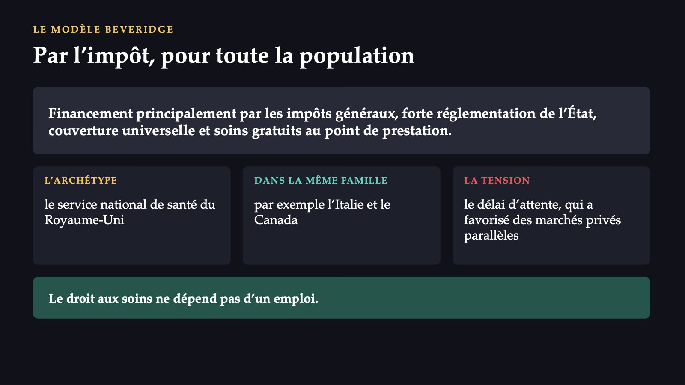
27 / 47Assurance sociale, avec plusieurs caisses
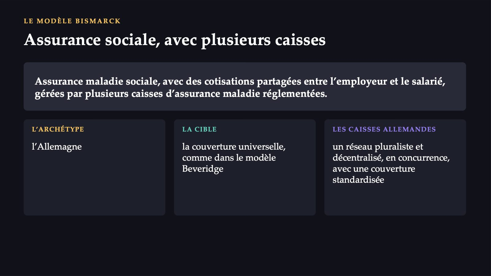
28 / 47Le modèle soviétique, suivi par la Roumanie
 29 / 47
29 / 47Ce qui compte : la cohérence, non la fidélité à un modèle
![TOUS LES SYSTÈMES DEVIENNENT HYBRIDES Ce qui compte : la cohérence, non la fidélité à un modèle Beaucoup de systèmes combinent le financement solidaire et la concurrence réglementée entre assureurs et prestataires. Les anciens systèmes Semachko sont passés à l’assurance sociale. DANS UN SYSTÈME BEVERIDGE le problème de l’Hôpital A arrive à l’autorité qui possède et finance les services DANS UN SYSTÈME BISMARCK le directeur a affaire à plusieurs caisses d’assurance maladie La classification répond à une question pratique : qui peut résoudre le problème ?](diapozitive/C07/030.jpg) 30 / 47
30 / 47Le chemin du système roumain, en six étapes
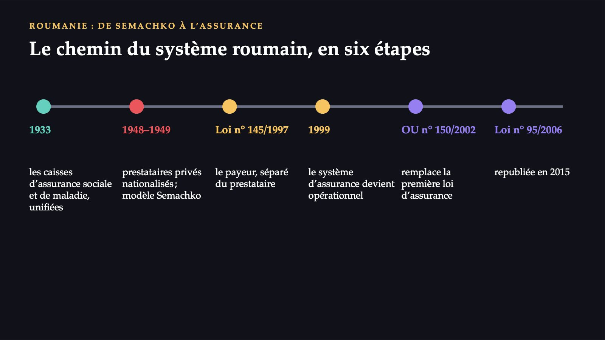
31 / 47Deux niveaux, mais un système très centralisé
![LA ROUMANIE AUJOURD’HUI Deux niveaux, mais un système très centralisé UNE SEULE CAISSE NATIONALE les cotisations, mises en commun au niveau central ; les caisses départementales achètent des services aux prestataires LE CHOIX DU PATIENT les patients choisissent librement leur prestataire, à tous les niveaux de soins LE MINISTÈRE ET LES DIRECTIONS l’autorité centrale et ses services déconcentrés ; l’institut de santé publique fournit encadrement et indicateurs LA QUALITÉ ET LES HÔPITAUX l’autorité pour la qualité, depuis 2015 ; les hôpitaux publics, du ministère ou des autorités locales](diapozitive/C07/032.jpg) 32 / 47
32 / 4789 %
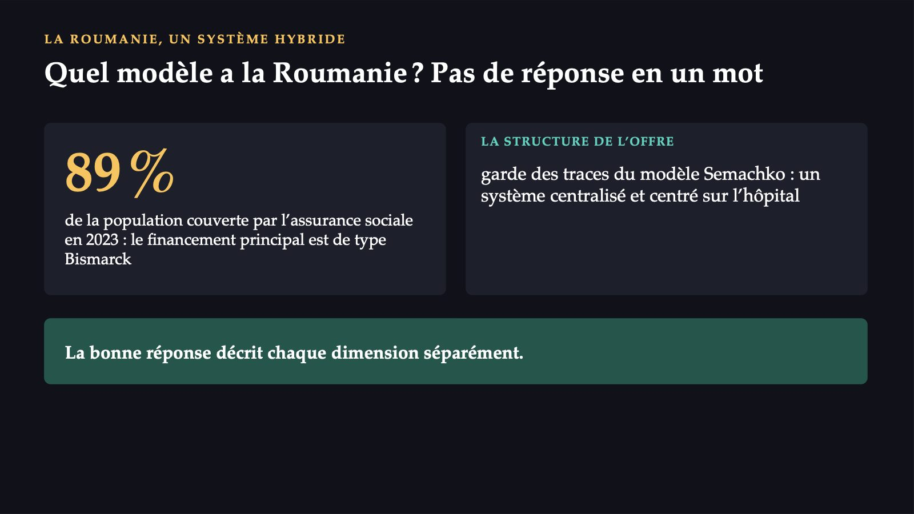
33 / 47Trois systèmes anonymisés
![MENTIMETER · VOTE RAPIDE RECONNAÎTRE LE MODÈLE Trois systèmes anonymisés a un système d’Europe occidentale d’aujourd’hui, financé par les impôts généraux, pour toute la population, gratuit au point de soins b salariés et employeurs partagent les cotisations, gérées par plusieurs caisses d’assurance maladie réglementées c l’assurance sociale a remplacé, à la fin des années quatre-vingt-dix, le financement par le budget ; l’État possède la majorité des hôpitaux ; paiements directs élevés Pour chacun : Beveridge · Bismarck · Semachko · hybride post-communiste Répondez sur votre téléphone, au code affiché.](diapozitive/C07/034.jpg) 34 / 47
34 / 47a : Beveridge · b : Bismarck · c : hybride post-communiste
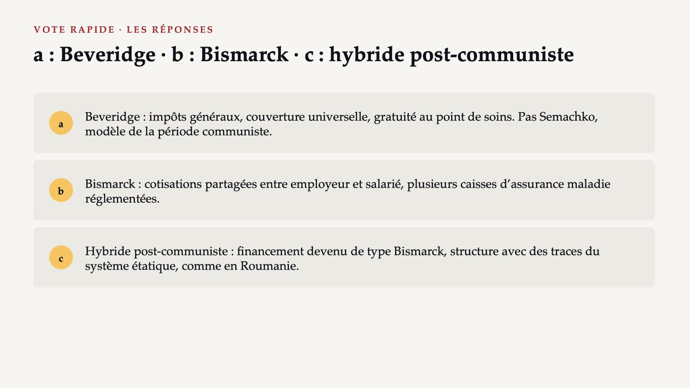
35 / 47L’Hôpital A, six mois plus tard
![TROISIÈME ACTE · CE QUI S’EST PASSÉ L’Hôpital A, six mois plus tard CE QUI A MARCHÉ trois infirmières de chirurgie, passées volontairement après une formation de deux semaines ; logement du conseil départemental ; deux embauches ; gardes non couvertes, de onze à deux par trimestre CE QUI RESTE une nouvelle infirmière est partie après quatre mois ; les patients sans médecin de famille arrivent toujours par les urgences ; le contrat n’a pas augmenté Cas construit pour le cours ; le dénouement est plausible, non réel.](diapozitive/C07/036.jpg) 36 / 47
36 / 47Où la salle a raison et où elle se trompe
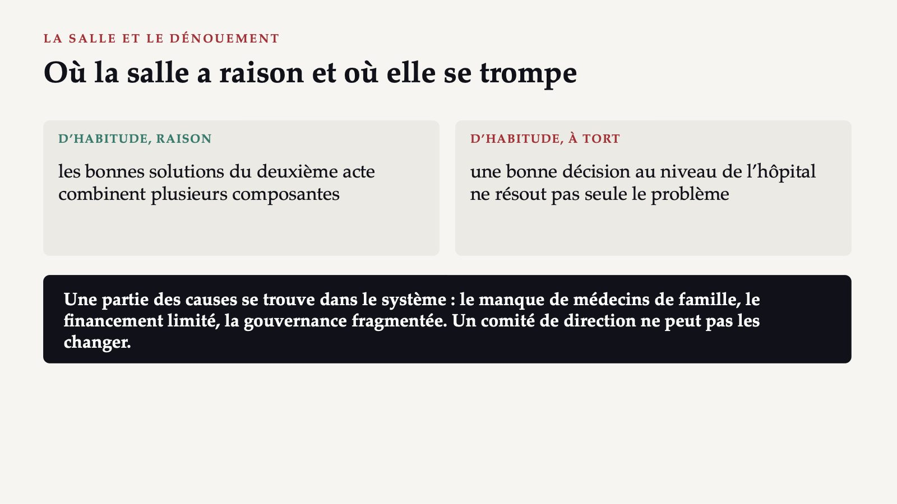
37 / 47La Roumanie et l’Union européenne, en 2024
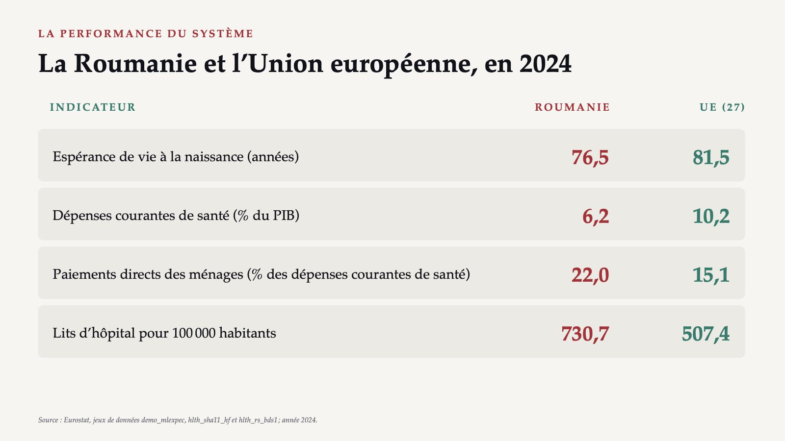
38 / 47Centré sur l’hôpital et sous-financé
![LES CHIFFRES SE LISENT ENSEMBLE Centré sur l’hôpital et sous-financé plus de lits que la moyenne des dépenses très inférieures à la moyenne des paiements directs élevés Une part importante du coût retombe sur le patient : des paiements directs élevés signifient une protection financière faible. Observatoire européen : près de la moitié du financement va aux hospitalisations, les patients contournent les soins primaires, la mortalité évitable est la plus élevée de l’UE. Sources : OMS, 2007 ; analyse du système de santé de la Roumanie (OMS Europe et Observatoire européen).](diapozitive/C07/039.jpg) 39 / 47
39 / 47Les constats, selon les composantes du cadre
![L’ANALYSE DU SYSTÈME ROUMAIN Les constats, selon les composantes du cadre SERVICES centré sur l’hôpital ; soins primaires contournés PERSONNELS près de 200 localités sans médecin de famille, en 2024 INFORMATION pas de stratégie ni d’interopérabilité ; données de qualité seulement depuis 2022 FINANCEMENT les dépenses les plus faibles de l’UE ; paiements directs de 21,4 % en 2022 GOUVERNANCE planification insuffisante ; réformes fragmentées Les paiements directs : 21,4 % dans l’analyse (2022), 22,0 % dans le tableau (2024) ; les années diffèrent. Sources : OMS, 2007 ; analyse du système de santé de la Roumanie (OMS Europe et Observatoire européen).](diapozitive/C07/040.jpg) 40 / 47
40 / 47La même crise, dans un autre système
![MENTIMETER · VOTE 3 TROISIÈME DÉCISION · LE TRANSFERT La même crise, dans un autre système Financement par l’impôt ; hôpitaux appartenant à une autorité régionale qui les finance aussi ; adressage obligatoire par le médecin de famille. Qui peut le mieux résoudre le problème ? A Le directeur de l’hôpital, seul B L’autorité régionale, qui possède et finance l’hôpital C Une caisse d’assurance maladie qui négocie le contrat D Les patients, en choisissant un autre hôpital Un seul vote, sans second vote. Répondez sur votre téléphone, au code affiché.](diapozitive/C07/041.jpg) 41 / 47
41 / 47B : l’autorité qui possède et finance
 42 / 47
42 / 47Dix questions, dans l’ordre du cours
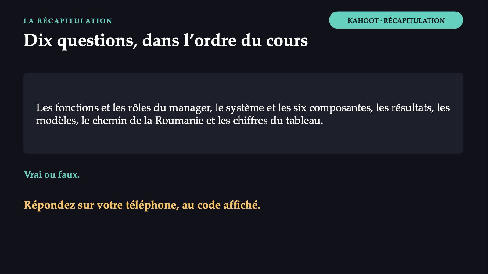
43 / 47Les réponses du jeu
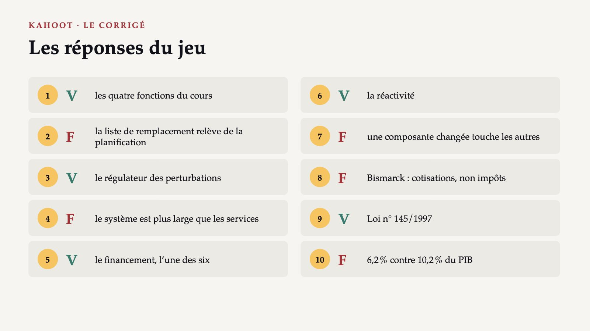
44 / 47De deux infirmières absentes au système du pays
![CE QUI RESTE De deux infirmières absentes au système du pays 1 Lundi matin, un bon chef de service organise et dirige ; dans les semaines suivantes, il planifie et contrôle. 2 Le comité de direction peut combiner personnes, argent, information et services. 3 Au-dessus de l’hôpital restent le manque de médecins de famille, le financement limité, les paiements directs élevés et la gouvernance fragmentée. 4 La classification des modèles répond à une question : qui peut résoudre le problème ? Le cadre des six composantes ne donne pas la solution ; il montre où la chercher.](diapozitive/C07/045.jpg) 45 / 47
45 / 47Ce que vous ferez autrement dans votre service
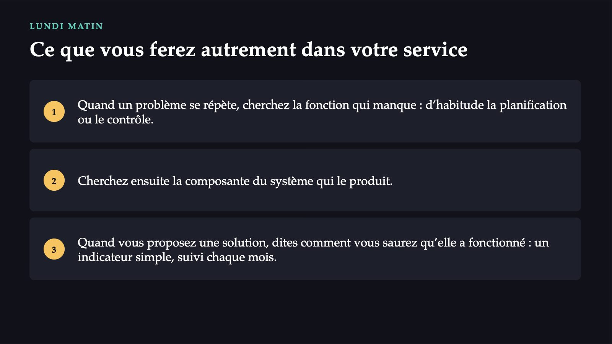
46 / 47Avant de partir
47 / 47Flèches ou espace : navigation · O : vue d’ensemble · N : notes de l’intervenant · F : plein écran · Échap : fermer